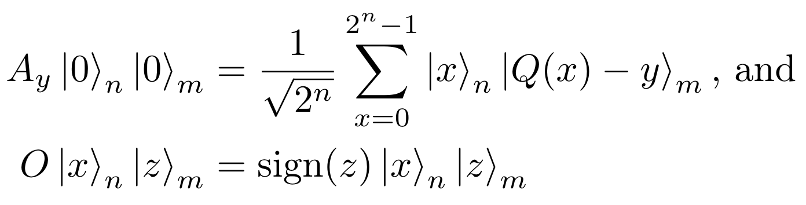
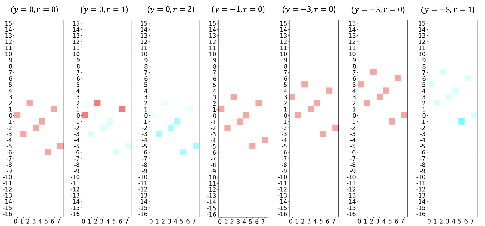

Ghi chú
Trang này được tạo từ docs/tutorials/04_grover_optimizer.ipynb.
Bộ tối ưu hoá Grover¶
Introduction¶
Grover Adaptive Search (GAS) đã được khám phá như một giải pháp khả thi cho các vấn đề tối ưu hóa tổ hợp, cùng với các thuật toán biến thiên như Giải Giá trị riêng Biến Lượng tử Variational Quantum Eigensolver (VQE) và Thuật toán Tối ưu hoá Xấp xỉ Lượng tử Quantum Approximate Optimization Algorithm (QAOA). Thuật toán áp dụng việc lặp đi lặp lại Tìm kiếm Grover để tìm giá trị tối ưu của một hàm mục tiêu, bằng cách sử dụng giá trị nổi tiếng nhất từ lần chạy trước đó làm ngưỡng. Tiên đoán thích ứng được sử dụng trong GAS nhận ra tất cả các giá trị trên hoặc dưới ngưỡng hiện tại (ứng với tối đa và tối thiểu), giảm kích thước của không gian tìm kiếm mỗi lần lặp lại khi ngưỡng được cập nhật, cho đến khi tìm thấy giá trị tối ưu.
Trong notebook này, chúng ta sẽ khám phá từng thành phần của GroverOptimizer, sử dụng các kỹ thuật được mô tả trong GAS, bằng cách giảm thiểu vấn đề Tối ưu hóa nhị phân không giới hạn bậc hai (QUBO), như được mô tả trong [1]
References¶
Tìm kiếm thích ứng Grover¶
Grover Search, thành phần chính của GAS, cần ba thành phần chính:
Toán tử chuẩn bị trạng thái \(A\) được dùng để xây dựng sự chồng chập của tất cả các trạng thái trong không gian tìm kiếm.
Toán tử dự đoán \(O\), nhận biết các trạng thái liên quan và nhân biên độ của chúng với -1.
Toán tử khuếch tán Grover \(D\), nhân biên độ của trạng thái \(|0\rangle_n\) với -1.
Mặc dù cách triển khai của GAS còn tùy thuộc vào những trường hợp sử dụng đặc biệt khác nhau, nhưng khung hình chung vẫn vận hành theo các bước dưới đây.

GroverOptimizer sử dụng QuadraticProgramToNegativeValueOracle để xây dựng \(A_y\) sao cho nó chuẩn bị một thanh ghi \(n\)-qubit để biểu diễn cho các chồng chập bằng nhau của tất cả \(|x\rangle_n\) và a \(m\) - thanh ghi qubit để (xấp xỉ) biểu diễn cho \(|Q(x)-y\rangle_m\) tương ứng. Khi đó, tất cả các trạng thái có \((Q(x)-y)\) âm phải được gắn cờ bởi \(O_y\). Lưu ý rằng trong phần triển khai đã thảo luận, toán tử dự đoán thực sự độc lập với \(y\), tuy nhiên điều này không cần thiết. Để làm rõ, chúng ta sẽ gọi dự đoán là \(O\) trong trường hợp nó độc lập với \(y\).
Một cách chính thức, QuadraticProgramToNegativeValueOracle xây dựng một :math: A_y và \(O\) sao cho:

trong đó \(|x\rangle\) là mã hoá nhị phân cho số nguyên \(x\).
At each iteration in which the threshold \(y\) is updated, we adapt \(A_y\) such that the function values are shifted up or down (for minimum and maximum respectively) by \(y\). For example, in the context of finding the minimum, as the value of \(y\) decreases, the search space (negative values) also decreases, until only the minimum value remains. A concrete example will be explored in the next section.
Tìm cực tiểu của một vấn đề QUBO sử dụng GroverOptimizer¶
Ví dụ sau đây là một ví dụ đơn giản của bài toán tìm cực tiểu.
\begin{eqnarray} \min_{x \in \{0, 1\}^3} -2x_0x_2 - x_1x_2 - 1x_0 + 2x_1 - 3x_2. \end{eqnarray}
For our initial steps, we create a docplex model that defines the problem above, and then use the from_docplex_mp() function to convert the model to a QuadraticProgram, which can be used to represent a QUBO in Qiskit Optimization.
[1]:
from qiskit.algorithms import NumPyMinimumEigensolver
from qiskit_optimization.algorithms import GroverOptimizer, MinimumEigenOptimizer
from qiskit_optimization.problems import QuadraticProgram
from qiskit_optimization.translators import from_docplex_mp
from qiskit import BasicAer
from docplex.mp.model import Model
backend = BasicAer.get_backend("statevector_simulator")
[2]:
model = Model()
x0 = model.binary_var(name="x0")
x1 = model.binary_var(name="x1")
x2 = model.binary_var(name="x2")
model.minimize(-x0 + 2 * x1 - 3 * x2 - 2 * x0 * x2 - 1 * x1 * x2)
qp = from_docplex_mp(model)
print(qp.prettyprint())
Problem name: docplex_model1
Minimize
-2*x0*x2 - x1*x2 - x0 + 2*x1 - 3*x2
Subject to
No constraints
Binary variables (3)
x0 x1 x2
Tiếp tục, chúng ta tạo một GroverOptimizer, sử dụng 6 qubit để mã hóa dữ liệu, và sẽ được dừng lại sau khi thực hiện 10 lần duyệt qua GAS mà không có kết quả (ví dụ như giá trị của \(y\) không thay đổi). Hàm solve() được truyền vào giá trị QuadraticProgram mà chúng ta đã tạo ra từ trước và trả về một object chứa thông tin về lần chạy.
[3]:
grover_optimizer = GroverOptimizer(6, num_iterations=10, quantum_instance=backend)
results = grover_optimizer.solve(qp)
print(results.prettyprint())
objective function value: -6.0
variable values: x0=1.0, x1=0.0, x2=1.0
status: SUCCESS
Điều này chạy cho ra nghiệm tối ưu \(x_0=1\), \(x_1=0\), \(x_2=1\) và giá trị tối ưu là \(-6\) (trong hầu hết các lần thử vì đây là một thuật toán ngẫu nhiên). Trong ví dụ tiếp theo, một biểu diễn về trạng thái lượng tử được tùy chính cho thấy khả năng của GroverOptimizer khi được áp dụng cho QUBO này.

Mỗi đồ thị trên biểu diễn một lần duyệt qua GAS, với giá trị hiện tại \(r\) (biến đếm số lần duyệt) và \(y\) (= ngưỡng) được đề cập ngay trong tiêu đề. Trục X biểu diễn số nguyên tương ứng với đầu vào (ví dụ: ‘101’ \(\rightarrow\) 5 ) và trục Y cho ta thấy giá trị khả thi của hàm. Như ta thấy có 3 biến nhị phân, nên có \(2^3=8\) phương án khả thi, được biểu diễn ở trong mỗi bảng. Độ rực của mỗi màu tương ứng với xác suất đo được một kết quả nhất định (màu càng rực thì khả năng càng cao), màu thể hiện cho mỗi pha tương ứng (ý nghĩa của màu có thể xem ở hình dưới). Để ý rằng khi \(y\) giảm, chúng ta tăng tất cả các giá trị bằng đúng từng ấy, điều đó có nghĩa là sẽ có càng ngày càng ít các giá trị âm trong phân phối, cho đến khi chỉ còn một giá trị duy nhất (giá trị bé nhất).
Kiểm tra rằng GroverOptimizer tìm ra giá trị đúng¶
Chúng ta có thể kiểm tra rằng thuật toán đã hoạt động chính xác sử dụng MinimumEigenOptimizer trong Qiskit.
[4]:
exact_solver = MinimumEigenOptimizer(NumPyMinimumEigensolver())
exact_result = exact_solver.solve(qp)
print(exact_result.prettyprint())
objective function value: -6.0
variable values: x0=1.0, x1=0.0, x2=1.0
status: SUCCESS
[5]:
import qiskit.tools.jupyter
%qiskit_version_table
%qiskit_copyright
Version Information
| Qiskit Software | Version |
|---|---|
qiskit-terra | 0.21.0.dev0+dbd3961 |
qiskit-aer | 0.10.4 |
qiskit-ibmq-provider | 0.19.1 |
qiskit-optimization | 0.4.0 |
| System information | |
| Python version | 3.10.4 |
| Python compiler | GCC 11.2.0 |
| Python build | main, Apr 2 2022 09:04:19 |
| OS | Linux |
| CPUs | 4 |
| Memory (Gb) | 14.577545166015625 |
| Wed May 18 16:03:53 2022 JST | |
This code is a part of Qiskit
© Copyright IBM 2017, 2022.
This code is licensed under the Apache License, Version 2.0. You may
obtain a copy of this license in the LICENSE.txt file in the root directory
of this source tree or at http://www.apache.org/licenses/LICENSE-2.0.
Any modifications or derivative works of this code must retain this
copyright notice, and modified files need to carry a notice indicating
that they have been altered from the originals.
[ ]: